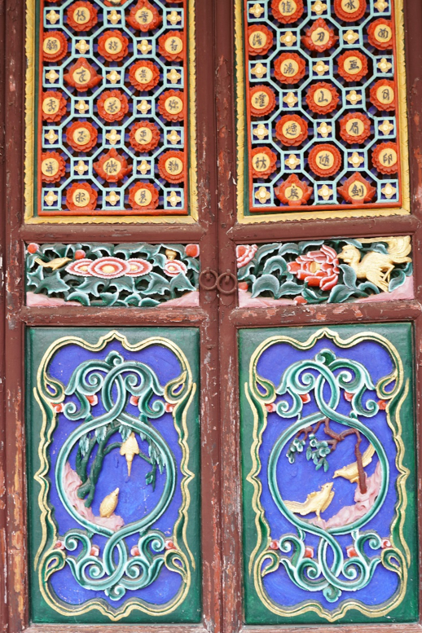
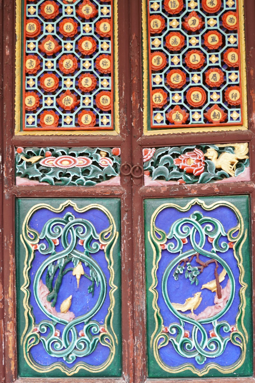

寶台山國家森林公園
Baotaishan National Forest Park
金光寺是位於寶台山國家森林公園內的佛家廟宇，佔地6450平方米，距離永平縣城大約一小時車程。羣山環繞，冠有「滇西名勝」稱號。明崇禎元年(1628年)，立禪和尚﹝又稱為埜山和尚﹞募化各方資金所建。金光寺於清康熙二十五年(1686年)為火災所焚，之後亦因博南古道衰落，信眾稀少則被人忽略導致年久失修。80年代後期修復之後，開始吸引周邊民眾前來朝拜，尤其是春季，香火鼎盛。
Jinguang Temple is a Buddhist temple located in Baotaishan National Forest Park. It covers an area of 6,450 square meters and is about an hour's drive from Yongping County. Surrounded by mountains, it is crowned with the title of “Western Scenic Spot”. In the first year of Ming Chongzhen (1628), the Zen monk (also known as the wild monk) was funded by various parties. The Jinguang Temple was burned by fire in the 25th year of Emperor Kangxi of Qing Dynasty (1686). Later, due to the decline of the ancient road of Bonan, the minority was neglected and led to disrepair. After the restoration in the late 1980s, it began to attract people from nearby to worship, especially in the spring, and the incense was flourishing.
 

寺廟內有12顆被譽為“活化石”的木蓮花，每年三月盛開。寺內的寶台紅樹樹齡近50年，花大如碟，顏色艷紅，是打卡的熱點。
There are 12 wood lotuses known as “living fossils” in the temple, which bloom in March every year. In addition, the Baotai mangrove tree is nearly 50 years old. It is like a dish, and the color is bright red. It is a hot spot for photo shooting.
寶台山原始森林內擁有世界上最高的野生滇山茶樹。走在森林小徑，可以感受遠離塵囂的寧靜。森林內植被豐富，還有獼猴，黑熊，孔雀等動物。夏季雨後，更是滿地菌子，是親近大自然的最佳去處。
The Baotai Mountain forest has the highest wild Camellia tree in the world. Walking on the forest trails, you can feel the silence away from the dust. The forest is rich in vegetation, including macaques, black bears, and peacocks. After the summer rain, it is full of fungus, and it is the best place to get close to nature.
建議行程： 金光寺參觀，森林遠足一日遊
Suggested one day trip: visit the temple and walk the forest trail